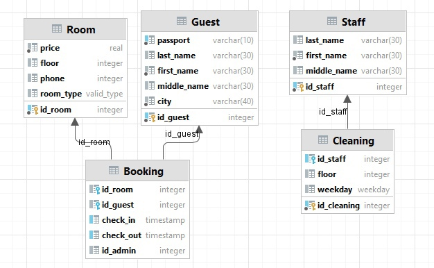
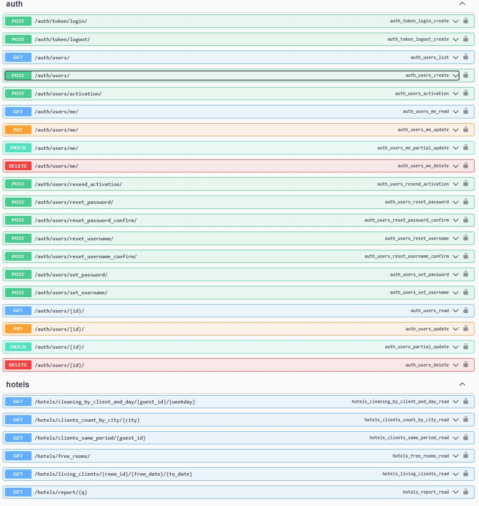

Лабораторная работа 3. Реализация серверной части на django rest. Документирование API.
Описание работы
Вариант 1
Создать программную систему, предназначенную для администратора гостиницы.
Такая система должна обеспечивать хранение сведений об имеющихся в гостинице номерах, о проживающих в гостинице клиентах и о служащих, убирающихся в номерах. Количество номеров в гостинице известно, и имеются номера трех типов: одноместный, двухместный и трехместный, отличающиеся стоимостью проживания в сутки. В каждом номере есть телефон.
О каждом проживающем должна храниться следующая информация: номер паспорта, фамилия, имя, отчество, город, из которого он прибыл, дата поселения в гостинице, выделенный гостиничный номер.
О служащих гостиницы должна быть известна информация следующего содержания: фамилия, имя, отчество, где (этаж) и когда ( день недели) он убирает. Служащий гостиницы убирает все номера на одном этаже в определенные дни недели, при этом в разные дни он может убирать разные этажи.
Работа с системой предполагает получение следующей информации:
- о клиентах, проживавших в заданном номере, в заданный период времени;
- о количестве клиентов, прибывших из заданного города,
- о том, кто из служащих убирал номер указанного клиента в заданный день недели,
- сколько в гостинице свободных номеров;
- список клиентов с указанием места жительства, которые проживали в те же дни, что и заданный клиент, в определенный период времени.
Администратор должен иметь возможность выполнить следующие операции:
- принять на работу или уволить служащего гостиницы;
- изменить расписание работы служащего;
- поселить или выселить клиента.
Необходимо предусмотреть также возможность автоматической выдачи отчета о работе гостиницы за указанный квартал текущего года. Такой отчет должен содержать следующие сведения:
- число клиентов за указанный период в каждом номере;
- количество номеров не каждом этаже;
- общая сумма дохода за каждый номер;
- суммарный доход по всей гостинице.
Модель БД

Models
models.py
class Guest(models.Model):
first_name = models.TextField()
middle_name = models.TextField()
last_name = models.TextField()
city = models.TextField()
passport = models.TextField()
class CleaningStaff(models.Model):
first_name = models.TextField()
middle_name = models.TextField()
last_name = models.TextField()
class Room(models.Model):
ROOM_TYPES = (
("SINGLE", "Single"),
("DOUBLE", "Double"),
("TRIPLE", "Triple"),
)
number = models.TextField(default="")
price = models.FloatField()
floor = models.IntegerField()
phone = models.IntegerField()
room_type = models.TextField(choices=ROOM_TYPES)
class Booking(models.Model):
room = models.ForeignKey(Room, related_name="bookings", on_delete=models.CASCADE)
guest = models.ForeignKey(Guest, related_name="bookings", on_delete=models.CASCADE)
check_in = models.DateTimeField()
check_out = models.DateTimeField()
admin = models.ForeignKey(User, related_name="bookings", on_delete=models.CASCADE)
class Cleaning(models.Model):
WEEK_DAYS = (
("SUNDAY", "Sunday"),
("MONDAY", "Monday"),
("TUESDAY", "Tuesday"),
("WEDNESDAY", "Wednesday"),
("THURSDAY", "Thursday"),
("FRIDAY", "Friday"),
("SATURDAY", "Saturday"),
)
staff = models.ForeignKey(CleaningStaff, related_name="cleaning", on_delete=models.CASCADE)
floor = models.IntegerField()
week_day = models.TextField(choices=WEEK_DAYS)
Views
views.py
class AbstractCountView(RetrieveAPIView):
serializer_class = CountSerializer
def filtered_queryset(self, *args, **kwargs):
return self.queryset.filter(**{self.lookup_field: kwargs[self.lookup_field]})
def retrieve(self, request, *args, **kwargs):
serializer = self.serializer_class(
CountObj(self.filtered_queryset(*args, **kwargs).count())
)
return Response(serializer.data)
class LivingClients(ListAPIView):
queryset = Booking.objects.all()
serializer_class = LivingClientsBookingSerializer
def get_queryset(self):
return self.queryset.filter(
Q(
Q(check_out__gte=self.kwargs["from_date"]) | Q(check_out__gte=self.kwargs["to_date"]),
check_in__lte=self.kwargs["from_date"]
) |
Q(
Q(check_out__lte=self.kwargs["to_date"]) | Q(check_out__gte=self.kwargs["to_date"]),
check_in__gte=self.kwargs["from_date"]
),
room_id=self.kwargs["room_id"]
)
class ClientsByCity(AbstractCountView):
lookup_field = "city"
queryset = Guest.objects.all()
class GetCleaningStaffByClientAndDay(APIView):
serializer_class = StaffByCleaningSerializer
def get(self, *args, **kwargs):
staff = Cleaning.objects.filter(week_day=kwargs["weekday"],
floor__in=Room.objects.filter(bookings__guest=kwargs["guest_id"]).values(
"floor"))
return Response(self.serializer_class(staff, many=True).data)
class FreeRoomsCount(AbstractCountView):
queryset = Room.objects.all()
def filtered_queryset(self):
return self.queryset.filter(Q(bookings__check_in__gt=datetime.datetime.now()) |
Q(bookings__check_out__lt=datetime.datetime.now()) | Q(
bookings__isnull=True))
class GetClientsSamePeriods(APIView):
serializer_class = GuestWithBookingSerializer
def get(self, *args, **kwargs):
result = []
for booking in Guest.objects.get(id=kwargs["guest_id"]).bookings.all():
result += [b.guest for b in
Booking.objects.filter(
Q(
Q(check_out__gte=booking.check_in) | Q(check_out__gte=booking.check_out),
check_in__te=booking.check_in
) |
Q(
Q(check_out__lte=booking.check_out) | Q(check_out__gte=booking.check_out),
check_in__lte=booking.check_in
)
).exclude(guest_id=kwargs["guest_id"])
]
return Response(self.serializer_class(result, many=True).data)
class QReport(APIView):
def get(self, *args, **kwargs):
if kwargs["q"] == 1:
q_filter = Q(check_in__gte=datetime.date(datetime.date.today().year, 1, 1),
check_in__lt=datetime.date(datetime.date.today().year, 3, 31))
elif kwargs["q"] == 2:
q_filter = Q(check_in__gte=datetime.date(datetime.date.today().year, 4, 1),
check_in__lt=datetime.date(datetime.date.today().year, 6, 31))
elif kwargs["q"] == 3:
q_filter = Q(check_in__gte=datetime.date(datetime.date.today().year, 7, 1),
check_in__lt=datetime.date(datetime.date.today().year, 9, 31))
elif kwargs["q"] == 4:
q_filter = Q(check_in__gte=datetime.date(datetime.date.today().year, 10, 1),
check_in__lt=datetime.date(datetime.date.today().year, 12, 31))
floors = []
for f in Room.objects.values("floor").annotate(Count("id")):
floors.append({"floor": f["floor"], "count": f["id__count"]})
rooms = []
for room in Room.objects.all():
days = 0
counter = 0
for booking in room.bookings.filter(q_filter):
days += (booking.check_out - booking.check_in).days
counter += 1
rooms.append(
{
"name": room.number,
"count": counter,
"profit": room.price * days
}
)
return render(
self.request,
"report.html",
{"rooms": rooms, "floors": floors, "profit": sum(r["profit"] for r in rooms)}
)
Serializers
serializers.py
class CountObj:
def __init__(self, count):
self.count = count
class CountSerializer(serializers.Serializer):
count = serializers.IntegerField()
class GuestSerializer(serializers.ModelSerializer):
class Meta:
model = Guest
fields = ("first_name", "middle_name", "last_name", "passport", "city")
class LivingClientsBookingSerializer(serializers.ModelSerializer):
guest = GuestSerializer()
class Meta:
model = Booking
fields = ("guest",)
class StaffSerializer(serializers.ModelSerializer):
class Meta:
model = CleaningStaff
fields = ("first_name", "middle_name", "last_name")
class StaffByCleaningSerializer(serializers.ModelSerializer):
staff = StaffSerializer()
class Meta:
model = Cleaning
fields = ("staff",)
class BookingSerializer(serializers.ModelSerializer):
class Meta:
model = Booking
fields = "__all__"
class GuestWithBookingSerializer(serializers.ModelSerializer):
bookings = BookingSerializer(many=True)
class Meta:
model = Guest
fields = ("first_name", "middle_name", "last_name", "passport", "city", "bookings")
URLs
urls.py
urlpatterns = [
path("living_clients/<int:room_id>/<str:from_date>/<str:to_date>", LivingClients.as_view()),
path("clients_count_by_city/<str:city>", ClientsByCity.as_view()),
path("cleaning_by_client_and_day/<int:guest_id>/<str:weekday>", GetCleaningStaffByClientAndDay.as_view()),
path("free_rooms/", FreeRoomsCount.as_view()),
path("clients_same_period/<int:guest_id>", GetClientsSamePeriods.as_view()),
path("report/<int:q>", QReport.as_view())
]
API
